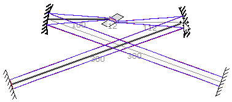
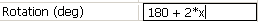
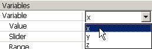

LaserCanvas 5 > Tutorials > Bow-Tie Resonator >
Part 3. Examine Astigmatism
< Prev | Next >
In the previous step, you may have noticed that the mode symmetry changes as the angle on the focusing mirror is changed. For some angles, a circular beam can be attained at the end mirrors, when the astigmatism introduced by the Brewster-angled crystal is compensated by the off-axis curved mirrors.
Now, we introduce the variable x for the incidence angle on the curved optics and examine the mode symmetry as this variable is varied.
-
Drag the system into a configuration similar to that shown below. Be sure that the separation between the curved optics is such that the cavity mode is stable.
-
Select both of the focusing mirrors by clicking near the centreline while holding the Shift key.

In the Face Angle field of the Property Manager, enter "x". (Don't type the quotes.) The cavity layout will change drastically, don't worry about that for now.- 
In the Rotation field (in the System group) of the Property Manager, enter the formula "180 + 2*x". (Spacing is not important.) The cavity layout will change again.
If necessary, expand the Variables group of the Property Manager by clicking on the + Variables heading.- 
Select variable x from the Variable popup menu.
In the Range field, enter "-20, 20" including the comma. In our case, the variable x represents the range of angles (in degrees) over which we wish to examine the cavity mode.
Now, drag the Slider back and forth. As the Slider is moved, the incidence angles on the mirrors change accordingly.
The formula "180 + 2*x" entered for the system rotation does not affect the cavity mode, only how the system is displayed in the Canvas window. We add it here so that the bow tie maintains its canonical layout.
Dragging the focusing mirrors once these equations have been defined will erase the definitions. If you need to adjust the spacing between the optics, you’ll have to re-enter the Face Angle formulas. Or, you could define another variable to specify the spacing.
< Prev | Next >